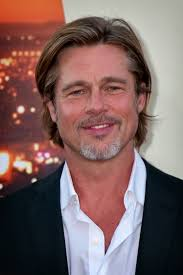

| Will Smith:
Artiste ayant connu le succès dans trois différents médias de divertissement aux États-Unis et dans le monde : cinéma, télévision et musique Filmographie : Men In Black, Independance Day, Bad Boys, Je suis une légende ... |
|
Clint Eastwood:
Autodidacte, il commence dans de petits rôles dans des séries pour finalement se faire remarquer et devenir un acteur pour de nombreuses grandes compagnies comme Warner Bros ou encore Universal. Il ne remplit pas seulement le rôle d'acteur, il est également un réalisateur, producteur de cinéma ou encore compositeur de renommé Filmographie : Impitoyable, Million Dollar Baby, Gran Torino ... |
|
Catherine Deneuve:
Actrice française, elle est l'égérie de plusieurs grands réalisateurs. Avec plus d’une centaine de films à son actif, elle est considérée comme l'une des plus grandes actrices du cinéma français. Elle obtient deux Césars de la meilleure actrice, une nomination à l'Oscar de la meilleure actrice et un prix d'interprétation dans les trois plus grands festivals de cinéma : Cannes, Venise et Berlin. Filmographie : Belle de jour, Tristana, Peau d'âne, Le Dernier Métro, Indochine ... |
|
Gerard Depardieu:
Artiste français (mais également de nationalité Russe) connu dans différents domaines tels que :acteur, chanteur, réalisateur, producteur de cinéma, de télévision et de théâtre français. Filmographie : Astérix et Obélix, Jean de Florette, La Chèvre, Les Valseuses, La Môme ... |
|
Johnny Depp:
Acteur, réalisateur, guitariste, chanteur, scénariste et producteur de cinéma américain, il devient célèbre dans les années 1980 avec son rôle dans la série télévisée 21 Jump Street. Un acteur propre aux personnages que l'on qualifierai d'atypiques. Filmographie : Edward aux mains d'argent, Arizona Dream, Las Vegas Parano, Alice au pays des merveilles, Pirates des Caraïbes... |
|
Leonardo Dicaprio:
Acteur, scénariste et producteur de cinéma américain, il n'était qu'un jeune garçcon lors de ses débuts dans le domaine du cinéma. Il se retrouve alors dans plusieurs rôles à jouer avec d'autres grands acteurs tels que Johnny Depp ou encore Robert de Niro. Il est découvert en 1996 par le grand public dans l'adaptation moderne et rock d’une pièce de Shakespeare : Roméo + Juliette pour ensuite interpréter le rôle principal du BlockBuster: Titanic Filmographie : Titanic, Les Infiltrés, Inception, Le Loup de Wall Street, The Revenant, Once Upon a Time in Hollywood... |
|
Robert Downey Junior:
Acteur américain, il est nommé pour l'Oscar du meilleur acteur en 1993 pour son interprétation de Charlie Chaplin dans Chaplin, mais connaît ensuite un passage à vide du fait de graves problèmes de drogue et d'alcool qui le conduisent en prison Il interprète Iron Man dans les films des studios Marvel, un premier film qui se trouve à l'origine de la création de l'Univers cinématographique Marvel dont il deviendra l'une des figures majeures. Filmographie : Chaplin, Univers cinématographique Marvel, Tonnerre sous les tropiques, Sherlock Holmes... |
|
Jean Dujardin:
Acteur, humoriste, scénariste, réalisateur et producteur de cinéma français. Sa carrière débute sur scène et à la télévision durant les années 1990, au sein de la troupe d'humoristes Nous Ç Nous, puis s'impose comme un acteur populaire grâce à la série télévisée Un gars, une fille. Il connaît un grand succès au cinéma par la suite, il est le premier à remporter l'Oscar du meilleur acteur en tant que français. Cela lui permet alors par la suite d'intégrer de grands BlockBusters américains en tant que second-rôle. Filmographie : Brice de Nice, OSS 117 : Le Caire, nid d'espions, OSS 117 : Rio ne répond plus, The Artist, J'accuse ... |
|
Morgan Freeman:
Acteur, réalisateur et producteur de cinéma américain, il commence sa carrière théâtrale et cinématographique en 1964, tenant essentiellement des seconds rôles pendant plus de vingt ans. Il reçoit alors l'Oscar du meilleur acteur dans un second rôle pour Million Dollar Baby en 2004, ainsi qu'une nouvelle nomination à l'Oscar du meilleur acteur en 2009, pour Invictus. Filmographie : Million Dollar Baby, Seven, Impitoyable, Les Evadés, Invictus ... |
|
Tom Hanks:
Acteur, réalisateur et producteur de cinéma américain. Il est devenu célèbre avec le film Splash, avant de connaître la consécration avec Philadelphia et Forrest Gump, qui lui valurent chacun l'Oscar du meilleur acteur. Il est l'acteur le plus prolifique de l'histoire du cinéma en matière de succès commerciaux Filmographie : Philadelphia, Forrest Gump, Il faut sauver le soldat Ryan, La Ligne verte, Seul au monde ... |
|
Jennifer Lawrence:
Actrice et productrice américaine, elle accède à une notoriété internationale en 2012 en incarnant Katniss Everdeen dans la saga de science-fiction The Hunger Games, dont quatre longs-métrages sortent jusqu'en 2015. Elle est l'actrice la mieux payée au monde avec un revenu annuel estimé à 52 millions de dollars Filmographie : Winter's Bone, X-Men, Hunger Games, Happiness Therapy, American Bluff ... |
|
Sophie Marceau:
Actrice et réalisatrice française, elle a été révélée à l'âge de 14 ans par le film La Boum, qui lui a permis de devenir d'emblée une vedette du cinéma français. Filmographie : La Boum, Joyeuses Pâques, L'Étudiante, Braveheart, Le monde ne suffit pas, Tu veux ou tu veux pas ... |
|
Omar Sy:
Acteur, producteur, réalisateur, scénariste et humoriste français, il accède à la notoriété en formant, avec Fred Testot, le duo comique Omar et Fred. Le 24 février 2012, il reçoit le César du meilleur acteur pour sa prestation dans Intouchables. Ce succès lui ouvre notamment les portes d'Hollywood et il tourne dès lors dans plusieurs blockbusters du cinéma américain. Filmographie : Intouchables, Chocolat, Samba, Jurassic World, X-Men: Days of Future Past ... |
|
|  | Brad Pitt:
Acteur et producteur de cinéma américain, repéré dans une publicité pour Levi's, Brad Pitt sort de l'anonymat grâce à un petit rôle. En très peu de temps, il devient une véritable star. Au cours de sa carrière, il reçoit six nominations aux Oscars et cinq nominations aux Golden Globes, dont un remporté. Filmographie : Seven, Fight Club, L'Étrange Histoire de Benjamin Button, Inglourious Basterds, Once Upon a Time in Hollywood ... |
Scarlett Johansson:
Actrice, réalisatrice, scénariste, productrice et chanteuse américaine. Elle est révélée à l'âge de quatorze ans, grâce à sa prestation dans L'Homme qui murmurait à l'oreille des chevaux. Elle devient alors un pilier de l'univers cinématographique Marvel, où elle incarne la Veuve noire. Elle s'impose alors comme une tête d'affiche de blockbusters d'action aux Etats-Unis. Filmographie : Univers cinématographique Marvel, Lucy, L'Homme qui murmurait à l'oreille des chevaux, Ghost World, Match Point, The Island, Marriage Story ... |